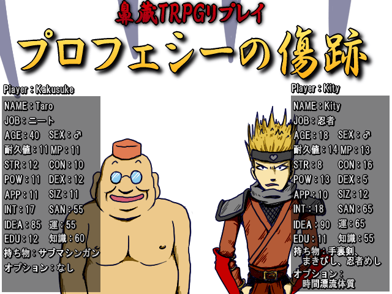

作品紹介
| ≪ Back | トップページ | 作品一覧 | Next ≫ |
| No044. - プロフェシーの傷跡 |

| 使用ツール：VX |
| 作者：めざ |
| ジャンル：リプレイ |
| 動画・配信：大丈夫だ、問題ない。 |
|
# MOD-> Meza 2012/01/24 米============================================ ━─━─━─━─━─━━─━─━─━─━─━─━─━─━─━─━ 【テーブルトークRPG】 プレイヤーがゲームキーパー（進行役）と対話しながら ゲームの舞台を探索するゲーム。 【リプレイ】 上記テーブルトークRPGのログ。 見るゲー。 ━─━─━─━─━─━━─━─━─━─━─━─━─━─━─━─━ TRPGをプレイした事が無い方にも、TPRGの雰囲気が伝わると幸いです。 とはいえ、キーパー含む全員が未経験者なので、 本来の雰囲気とは異なるかもしれません……。 シナリオは「クトゥルフの呼び声」シリーズからチョイスします。 耐久値 ： １になると意識不明に、０になると死亡します。 MP ： 0になると意識不明になります。 SAN ： 一度に5減ると一時的狂気、1/5減ると不定の狂気、０になると永久に狂気になります。 狂気に陥ると、まともに行動できなくなります。 この３つのパラメータが生命線です。 ■■■■■■■■■■■■■■■■■■■■■■■■■■■■■■■■■■■ 此度は本祭りに間に合わす事ができず、 本当に申し訳ございませんでした。 製作は細々と続けておりますので、 また別の機会にて、お披露目させて頂きたいと思います。 SS履歴 その１ その２ その３ その４ # MOD<- Meza 2012/01/24 米============================================ |
| 管理人コメント：ふんぐるい むぐるうなふ くとぅるふ るるいえ うが＝なぐる ふたぐん |
| ダウンロード(00.0MB) / 感想掲示板 ツイート |
更新情報・お知らせ
- 2012/02/06
- SS コメント 変更
- 2011/12/11
- SS コメント 変更
- 2011/11/20
- エントリー